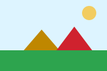

Kampüste Bahar Şenliği

Çorlu Mühendislik Fakültesi öğrenci toplulukları, bahar şenliği kapsamında üç gün sürecek etkinlik programını açıkladı. Programda robot yarışması, web tasarım atölyesi, söyleşiler ve konserler yer alıyor. Görsel sola yaslanmış (float) olduğundan bu paragrafın metni görselin sağından ve altından akmaktadır.
Etkinlik alanına erişim, kampüs ana girişinden itibaren yönlendirme levhalarıyla sağlanacaktır. Katılım ücretsizdir; atölyeler için kontenjan sınırlıdır ve kayıtlar öğrenci bilgi sistemi üzerinden alınmaktadır.
Program (clear: both)
Bu başlığa clear: both verildiği için başlık, yüzen görselin altından başlar.